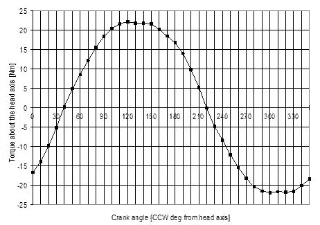

Contents | About | Contact
article 17, issue 05
Jeremy M. Garnet
December 21, 2008
The direct-drive recumbent bicycle has the crank axle concentric with the front wheel, and a planetary gear front hub. This design offers the advantage of simplicity, good weight distribution and a large load capacity—but has the disadvantage of pedal force feedback to the handlebars due to the fork mounting of the pedals, and excessive front assembly mass due to the weight of the rider's feet on the fork-mounted pedals. This paper explores force feedback as a function of head angle and a method of calculating an additional centering spring is presented. A variable-geometry bike is used to give a qualitative, real-life assessment of the results, and to explore the human-factor issues unseen in the equations. Finally, a suitable design configuration is presented.
[Editors' note: this is a condensed version of the article without any equations and only some of the diagrams. The complete article may be downloaded as PDF (600 kB) by clicking here. The figure numbering differs between condensed and full versions.]
The direct-drive recumbent bicycle has the crank axle mounted on the front fork, concentric with the front wheel axis. Gearing is provided by a transmission in the front hub. Figure 1 illustrates the basic layout of the author's direct drive recumbent.
Figure 1: A direct-drive recumbent bicycle
This configuration results in a very simple bicycle with no chain, and it allows a full-size front wheel to be positioned for ideal mass distribution and braking stability. The result is improved low speed balancing, a smoother ride, lower rolling resistance, and more effective braking. In addition, this can all be achieved with a user-friendly seat height and low bottom bracket, making the design well suited for in-town riding. The cargo carrying capacity of the direct drive recumbent is impressive due to the amount of space made available under the seat.
The earliest bikes had directly driven front wheel drive. The ordinary, or high-wheeler is an example. As early as 1892, a planetary gear hub and a smaller wheel were available to replace the huge front wheel—but this design was largely overshadowed by the enormous popularity of the "safety" rear wheel drive chain driven bike. It was not until the bicycle design renewal in the 1970s that the idea of a direct-drive recumbent was seriously explored.
More recently Thomas Kretschmer in 2000 proposed and designed a direct-drive recumbent with a planetary gear hub for which he has German patents DE 19736266 and DE 19824745. John Stegmann in 2002 proposed a direct-drive design for cargo-carrying. In the following year the author built a direct-drive recumbent using a modification of a Schlumpf Speed-Drive unit.
This research comprises a pedal force feedback analysis, a handling analysis, an experimental analysis, and conclusions with a recommended geometry.
Since the pedals are mounted on the fork rather than the frame, the rider's pedaling force generates an alternating steering torque which the cyclist must resist. A reduction in this would result in a design that was more user-friendly for new riders and more comfortable.
Kretschmer suggested a shallow head angle to reduce the pedal force feedback. The shallow inclination aligns the head axis more closely with the direction of the applied pedal force, reducing the resulting torque about the steering axis. However this can have an adverse effect on handling. Therefore it would be useful to find the best compromise between low pedal force feedback and user-friendly handling.
In a direct-drive recumbent, the mass of the front assembly is considerably higher than with a regular bicycle and the centre of this mass is located further from the steering axis.
This increases the torque that is generated around the steering axis when the bicycle is leaned into a turn or when the steering is turned. This results in over-control, with more steering response than necessary for stable hands-free riding. To address this issue, a direct-drive recumbent requires a different frame and fork geometry. Kretschmer suggested 2-3 cm of trail (compared to about 5-6 cm in conventional bikes) and also a centering spring for the steering.
Figure 2: Defining the recumbent angle — view larger
The force that the rider must exert to restrain the net torque around the steering axis depends also on the handlebar position.
Three handlebar positions are commonly used in recumbent bicycles: above-seat, below-seat, and hamster position.
Figure 3: Above-seat handlebar position
Figure 4: Below-seat handlebar position
Figure 5: Hamster handlebar position
The above-seat, arms outstretched position (figure 3) allows the arms to be "locked" in the outstretched position, forming a mechanical brace between the seat back and the handlebar grips. This reduces the contribution required of the muscles in the arms, resulting in lower rider fatigue.
The below-seat position (figure 4) also allows the arms to lock in an outstretched position, but the plane of the outstretched arms is nearly parallel to the steering axis. As a result, the advantage of the mechanical brace of the outstretched arms is lost, and the arms will instead strenuously resist the pedal induced torque.
The hamster position (figure 5) lacks the bracing advantage of the outstretched arms, resulting in a greater contribution by the muscle groups in the arms, and correspondingly increased muscular fatigue.
Therefore, of the three possible positions, the above seat outstretched arm position is the superior choice for a direct-drive recumbent. This is also the handlebar position preferred by Stegmann.
The handling of a bicycle arises from a complex interaction of gravitational, inertial and gyroscopic forces.
For a given head angle, the front wheel trail and the steering centering spring will determine how a direct-drive recumbent handles. At low speed, gyroscopic forces are low, and a static analysis of the applied gravitational forces on the steering can be used to set the front wheel trail and design an effective centering spring.
When a stationary bike is held vertically and the steering is turned from the centre, a torque is generated about the head axis (figure 6). A steering torque is also generated when the bike is leaned to one side with the steering held on-centre (figure 7). These two effects, which can be investigated separately, are known as steering-induced torque and lean-induced torque, respectively. Steering induced torque is also commonly referred to as "fork flop".
Figure 6: Steering-induced torque — view larger
Figure 7: Lean-induced torque — view larger
The steering-induced torque and lean-induced torque result from two applied gravitational forces: the force of the ground on the front wheel and the force due to the offset mass of the front assembly. "Offset mass of the front assembly" means that the centre of gravity of the front assembly (i.e. all the parts that swings with the steering) is offset from the head axis.
The design challenge is to reduce the steering-induced torque and lean-induced torque to a level that is similar to that of an upright bike. There are several ways of achieving this reduction.
Jim Papadopoulos in 1987 suggested that a bicycle with a large offset front assembly mass may benefit from some negative trail. With negative trail, the ground force on the front wheel produces a torque in a direction opposite to the torque coming from the offset front assembly mass, counteracting the effect of excessive front assembly mass and leading to a manageable torque for good handling.
The difficulty with this approach stems from the exclusion of all forces except gravity. Lateral forces also act on the front wheel due to uneven pavement, bumps and ridges. Since the resistance to these forces is inertial and, at higher speed, also gyroscopic, this produces a bike that may be quite stable on a smooth flat surface, but jittery and unsettling to ride on a rough surface.
Experiments with the variable geometry bike described below confirm this. A negative trail value that has this desired counterbalancing effect is about 60mm for a 56 degree head angle. The steering is well constrained on smooth turns, but the overall response of the bike is highly unfamiliar, particularly at low speed and on uneven surfaces. Therefore, in spite of the theoretical advantages of negative trail in controlling excessive front assembly mass, it is rejected because it lacks overall user-friendliness and stability.
Another way of balancing the offset front assembly mass is to add a
counter-balance mass. This mass would have to be considerable, however,
and therefore this idea is rejected also.
The purpose of the experimental part of this study is to assess the calculated results qualitatively. To do this a variable geometry bike (figure 8) was constructed to test the head angles with the corresponding trail values and spring constants. The bike employs the wheels, seat, handlebars, brakes, and transmission of the author's bike of figure 1.
Figure 8: Variable geometry test bike
The frame of the variable geometry bike is constructed so that changes in head angle and trail do not affect the positioning of the major frame members, and so that the position of the rider on the bike remains unchanged. This is done by using a headset hinge (A) which can be located in a range of positions on the "down tube" of the frame. The down tube is, in fact, not a tube but rather it is composed of four plates: two upper plates (B) and two lower plates (C) which sandwich the respective hinge flanges. At the opposite ends the lower plates sandwich a flange attached to the main horizontal frame member, and at the upper end the upper plates surround a flange attached to the fork assembly. The plates are accurately machined and held to the flanges by shoulder bolts. Thus by changing the four plates both the head angle and the trail can be changed.
A torsion bar spring (D) is placed between the two top plates and the two bottom plates to act as the centering spring. It is generally hat-shaped, with the vertical parts, which are parallel to the head axis, acting as torsion bars. The active length is thus the sum of the vertical lengths.
Table 1 lists the input values for the direct-drive recumbent bike. These values are based on the variable geometry frame and may, of course, differ in a possible future production bike. Also the mass of the front assembly will probably be less than the measured 19.5 kg (including feet) with a production bike. It is unlikely, however, that the front assembly mass will ever be much less than 15kg for an adult rider. Measurements were taken from an actual rider, (male, 1.83m tall, 89 kg) so these will also vary.
Table 1: Input values for direct-drive recumbent bike
| Head angle (from horizontal) | variable | |
| Radius of front wheel | 348 mm | 13.7 in |
| Fraction of weight on front wheel (bike and rider) | 0.5 | |
| Tread (lateral distance between pedal centers) | 297 mm | 11.7 in |
| Handlebar grip width (between grip centers) | 465 mm | 18.3 in |
| Seat height (defined as 76 mm (3 in) below hip pivot of rider) | 554 mm | 21.8 in |
| Distance from hip pivot to bottom bracket | 841 mm | 33.1 in |
| Crank length | 170 mm | 6.69 in |
| Plane of restraint of rider's arms (above horizontal) | 0.244 radians | 14 degrees |
| Mass of the front assembly (including rider's proportion) | 19.5 kg | 43 lbs |
| Trail | 28.6 mm | 1.125 in |
| Centering spring | none | |
Table 2 gives the input value for the reference bike. The reference bike is not one particular bike, but a "generic" upright bike. It represents a typical upright bike to which the user is familiar.
Table 2: Input values for reference upright bike
| Head angle (from horizontal) | 72 degrees | |
| Radius of front wheel | 348 mm | 13.7 in |
| Fraction of weight on front wheel (bike and rider) | 0.4 | |
| Trail | 50.8 mm | 2.0 in |
| Seat tube angle (from horizontal) | 73 degrees | |
| Mass of the front assembly | 3.64 kg | 8.0 lbs |
The pedal force feedback varies as the crank rotates. Figure 9 shows a typical variation with crank position. The head angle is 62 degrees to the horizontal (author's bike - figure 1). Note that the zero degree position is when the right crank is aligned with the head angle, and facing downward and forward.

Figure 9: Torque vs. crank angle
Figure 9 indicates that the pedaling torque feedback to the handlebars follows an approximately sinusoidal curve, with a maximum value when the right pedal crank is oriented at about 120 degrees counterclockwise (CCW) from the inclination of the head axis. There is a considerable flat portion of the curve extending from 120 to 150 degrees. Since the head angle in figure 11 is 62 degrees to the horizontal, this range is from 2 to 32 degrees after the top vertical position in the normal clockwise sense of the rotation of the right crank.
The severity of the pedal force feedback can be expressed as the maximum torque generated about the steering axis for each 360 degree rotation of the cranks. Figure 10 depicts this torque as a function of the head angle, when only the components acting in the plane of rotation of the cranks are included (in-plane only), and when all the components are included (all components). The out-of-plane forces are of a double benefit to the direct-drive recumbent designer: they reduce the force feedback and increase the effectiveness of reducing the head angle. This out-of-plane effect is predominately due to the outward lateral force which is generally in phase with the principal pedal force.The outward lateral pedal force arises from the direction applied by the rider's foot to the pedal. The line of this force passes through the center of pressure of the rider's body on the seat, creating an outward component at the pedals.

Figure 10: Peak torque vs. head angle
Figure 11 illustrates the peak torque around the steering axis expressed as a percentage of the peak torque applied to the crank axis. This gives a sense of how much of the torque required for propelling the bike is returned to the handlebars. As shown, shallow head angles can reduce this to a little less than 20 percent.

Figure 11: Peak torque as a function of peak pedaling torque
Figure 12 depicts the peak restraining force per hand expressed as a percentage of the peak pedal force. This figure shows that the peak restraining force per hand can be as low as 13% of the peak applied pedal force. This underscores that riding a direct-drive recumbent is not a tug-of-war between the rider's legs and arms—the force transmitted back to each hand is about an order of magnitude less than that applied to the pedals.
Figure 12: Peak restraining force per hand as a percentage of peak pedal force
It is instructive to compare the direct-drive recumbent with other recumbent bikes with moving bottom brackets (MBB). These other designs usually have a bottom bracket mounted generally above and in front of the front wheel, with a chain extending back to a front hub or derailleur gear. Examples are the Flevobike, Cruzbike™, Python (see Openbike (2008)), and bicycles developed by Tom Traylor (see for example United States design patent D277,744). Compared to a direct-drive recumbent, the steering axis is much further behind the pedals and thus the lateral outward pedal forces have a greater leverage around the steering axis, leading to reduced pedal force feedback. The distance from the steering axis to the bottom bracket can be in the range of 40-50 cm.
Figure 13 compares the pedal force feedback of two chain-driven MBB bikes with that of the direct-drive recumbent. The first chain-driven MBB bike is typical of a full size wheel (700C) configuration, with a steering axis to the bottom bracket distance of 47 cm. The large front wheel dictates a high bottom bracket and thus a recumbent angle of 73 degrees is typical (bottom bracket at hip pivot height). The second chain-driven MBB bike is typical of the small front wheel design, with a low bottom bracket giving a recumbent angle of 53 degrees and a steering axis to the bottom bracket distance of 40 cm. An above seat handlebar position similar to that of the direct-drive recumbent is assumed for both designs.
Comparing the curves in figure 13, a chain-driven MBB bike has a considerably lower (about one third) restraining force than a direct-drive recumbent, except in the very shallow head angle range where the poor leverage in the plane of the outstretched arms overrules.
Figure 13: Direct-drive compared to chain-driven MBB bikes
Figure 14 shows trail as a function of head angle as calculated. The trail of the front wheel varies very little in the head angle range of interest (52 to 62 degrees). This also agrees with the 2-3 cm proposed by Kretschmer (2000) for shallow head angles.
Figure 14: Trail vs. head angle
Figure 15 depicts the spring constant for the centering spring as a function of head angle, as calculated.
The centering spring rate increases rapidly with decreasing head angle. For example, the spring rate required for a 50 degree head angle is double that of a 62 degree head angle. This illustrates the importance of a centering spring as the head angle gets shallower.
Figure 15: Spring rate vs. head angle
The results of the test runs are of necessity somewhat subjective. The rider is the author in each case. The test runs are done using the variable geometry bike (figure 8) with a front wheel trail of figure 14 and, except as noted, a centering spring rate of figure 15. The first test (62 degree head angle) is the author's direct-drive bike (figure 1) which has no centering spring and a trail of 28.6 mm (1.125 in). No clips or cleats were used.
Figure 16 presents a convenient way of visualizing the pedal force feedback results. As shown in the figure, the rider exerts a pedal force extending in an outward-V from the centre of pressure of the rider on the seat to the pedals. The angle of this V produces the outward lateral pedal forces. Clearly, the closer the steering axis is to the rider's centre of pressure, the lower the resulting pedal force feedback. This is due to the correspondingly smaller lever arm around the steering axis as the steering axis approaches the vertex of the V. Thus the goal of the designer is to minimize the distance L in figure 16. This is consistent with Openbike (2008), who imply that in order to avoid any pedal force feedback, the steering axis should be aligned between the rider's hip pivots. As can readily be seen, the distance L in figure 16 can be minimized by any of three ways: a) moving the steering axis further back (i.e. decreasing the trail); b) decreasing the head angle; and c) increasing the seat height.
Unlike other moving bottom bracket bikes such as the Flevobike, the direct-drive recumbent designer does not have the luxury of translating the steering axis back toward the seat to reduce pedal force feedback—this would produce too much negative trail. Instead the designer is left with the approaches above and also the option of increasing the handlebar width and reducing the tread. Therefore the practical limits of all these are critical to the design.
Figure 16: Pedal force path visualization — view larger
From the test runs, it is clear that 56 degrees is the minimum practical head angle for user-friendly riding. Further reduction slows the steering response and causes a handlebar motion that is inconsistent with the plane of the outstretched arms of the rider.
The maximum seat height is determined by two criteria a) the rider's feet must still be comfortably placed on the ground, and b) the centre of mass of the bicycle and rider must remain low enough for effective braking.
From the author's own riding experience, a compressed seat height of 56 cm ensures that the rider's feet can be placed on the ground without discomfort. Given the author's size (1.83 m tall, 0.841 m hip pivot to bottom bracket), this seat height corresponds to a recumbent angle of 53 degrees, where the compressed seat height is defined as 76 mm below the rider's hip pivot.
Therefore a recumbent angle of 53 degrees is considered to be a good compromise between rider comfort/safety and reduced pedal force feedback.
The author's direct-drive recumbent and the variable geometry bike both have a handlebar width of 465 mm between the handlebar grip centers. Given an inverted U or W handlebar design, this width could be increased to 560 mm without being unduly cumbersome. The inverted U or W shape allows the center of pressure of the hands to be further apart for a given overall width, and provides greater knee clearance.
A tread value of 297 mm (centre-of pedal to centre-of-pedal) is based on an adaptation of a commercially available planetary chain ring unit (Schlumpf Speed-Drive®), so the tread is similar to that of a regular upright bike with a standard 68 mm wide bottom bracket. It is not really practical to reduce the tread to less.
Kretschmer suggested a wheelbase of 1200 mm for a direct-drive recumbent, and Stegmann 1450 mm. The author's direct-drive recumbent has a wheelbase of 1524 mm, and the variable geometry bike one of 1475 mm. With the shorter wheelbases there may be traction problems on hills due to the lightly loaded front wheel.
Table 3 presents the recommended design parameters for a user friendly direct-drive recumbent, based on the results of this study.
Table 3: Recommended design
| Wheel size | 700C front and rear |
| Wheelbase | 1300 to 1550 mm (51 to 61 inches) |
| Head angle | 56 degrees from the horizontal |
| Centering spring rate | 18 Nm/rad (based on figure 15) and adjusted for particular rider |
| Trail of the front wheel | 25 mm (1 inch) |
| Seat height | 560 mm (22 inches) for 1.83 m rider |
| Recumbent angle | 53 degrees |
| Tread | 297 mm (11.7 inches) between pedal centers |
| Handlebar position | over-seat, arms outstretched |
| Handlebar type | inverted-U or inverted-W |
| Handlebar width | 560 mm (22 inches) between handlebar grip centers |
| Front assembly with high rigidity in torsion | |
This design returns only 12% of the peak applied pedal force to each hand of the rider.
The resulting bicycle is shown in Figure 17.
Figure 17: Recommended design
Hull, M. L., and R. R. Davis (1981). "Measurement of pedal loading in bicycling: I. Instrumentation." Journal of Biomechanics 14:843-855.
Davis, R. R., and M. L. Hull (1981). "Measurement of pedal loading in bicycling: II. Analysis and results." Journal of Biomechanics 14:857-872.
Papadopoulos, Jim. (1987). "Bicycle steering dynamics and self-stability: A summary report of work in process." Cornell Bicycle Project report, December 15; http://ruina.tam.cornell.edu/research/topics/bicycle_mechanics/papers/bicycle_steering.pdf
Kretschmer, Thomas (2000). "Direct-drive (chainless) bicycles.", Human Power, no. 49:11-14.
Stegmann, John. (2002). "Chain of thought." Velo Vision, no. 8:22-25 (December).
Fehlau, Gunner. (2003). The Recumbent Bicycle, 2nd ed. Grand Rapids: Out Your Backdoor Press.
Garnet, Jeremy. (2003). "Delving into direct drive." Velo Vision, no. 12:18-20 (December).
Wilson, David Gordon. (2004). Bicycling Science, 3rd ed. Cambridge, Massachusetts: The MIT Press.
Openbike (2008) http://en.openbike.org/wiki/Pedal/Steering_Interference.
Human Power eJournal
{kind=link}
{kind=link}
{kind=link}
{kind=link}